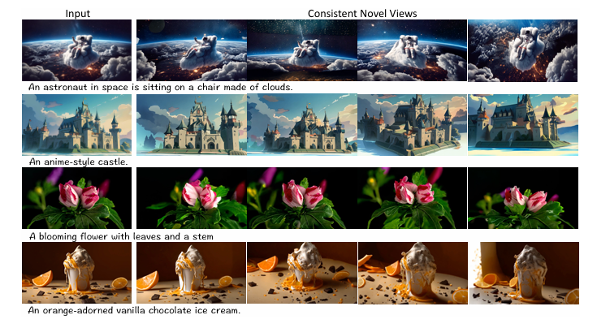

ViewCrafter (Yu et al., 2024). High-fidelity novel view synthesis from as little as one input image.
ViewCrafter: Walking a Camera Through a Scene Using Just One Photo
Zehao Zhang (Yonsei University)
Oct 26, 2025
Based on: “ViewCrafter: Taming Video Diffusion Models for High-fidelity Novel View Synthesis,”
Wangbo Yu, Jinbo Xing, Li Yuan, Wenbo Hu, Xiaoyu Li, Zhipeng Huang, Xiangjun Gao,
Tien-Tsin Wong, Ying Shan, and Yonghong Tian (2024).
0. First, what does ViewCrafter actually do?
Instead of starting with equations, let's just look at what this thing can do.
ViewCrafter takes one single photo, plans a smooth camera path, and generates a
video that looks like a real camera flying through the scene — with consistent
geometry and realistic motion, not just a wobbly morph.
Input single view
Planned camera trajectory
Generated fly-through (novel views)
Flower scene single captured photo
Planned 6-DoF camera path
ViewCrafter's generated novel-view video (animated)
Statue / building scene single captured photo
Planned 6-DoF camera path
Generated fly-around sequence (animated)
Train scene single captured photo
Planned 6-DoF camera path
Generated fly-by sequence (animated)
Figure A. Zero-shot novel view synthesis from a single photograph.
Each row is one real scene. Left: the only real input image we give ViewCrafter.
Middle: the automatically planned 6-DoF camera trajectory (how the virtual camera will move in 3D).
Right: frames from the generated fly-through video following exactly that path.
The motion is spatially meaningful, instead of “melting” the original picture.
Images derived from Yu et al., 2024 / project demos.
With two input views (two different photos of the same scene), ViewCrafter fuses them
into a stronger internal 3D understanding, so the synthesized motion gets even more
consistent — fewer holes, fewer flickers, better geometry.
Input view #1
Input view #2
Generated sweep (novel views)
House scene captured view #1
Captured view #2
Generated smooth orbit (animated)
Barn / yard scene captured view #1
Captured view #2
Generated fly-through (animated)
Car scene captured view #1
Captured view #2
Generated walk-around (animated)
Figure B. Two-view fusion.
In each row, the first two columns are just two casually captured viewpoints of the same scene.
The third column shows ViewCrafter’s synthesized “camera sweep,” which smoothly moves between,
around, and beyond those inputs while keeping texture and structure stable across frames.
Images derived from Yu et al., 2024 / project demos.
1. Why does this matter?
The task here is called novel view synthesis (NVS):
generate new viewpoints of a scene that the camera never actually captured.
This is useful for real estate previews, AR/VR content creation,
robotics perception, or just creative world-building.
Classic 3D reconstruction methods (NeRF, Gaussian splatting, etc.)
usually need lots of images from many angles.
ViewCrafter attacks the nightmare mode: it tries to do high-fidelity,
pose-controlled, temporally stable novel views from only one or two input images.
2. Key contributions (what’s really new?)
(1) Point-conditioned video diffusion.
Instead of telling a diffusion model “please rotate 30° left,”
ViewCrafter actually renders a coarse point cloud from that new camera pose,
then asks the video diffusion model to clean it up.
That gives precise camera control and less hallucination drift.
(2) Iterative exploration / next-best-view planning.
It doesn’t just spit out one fly-through.
It repeatedly plans the next camera path that reveals unseen areas,
synthesizes those views, and fuses them back to improve its global 3D.
(3) From almost nothing to an explorable 3D scene.
After several iterations, you get enough consistent multi-view frames
to train a fast 3D Gaussian Splatting (3D-GS) model — so you can literally
fly around the reconstructed scene in real time.
(4) Text → image → 3D world.
You can start from a text prompt, generate a single “fantasy” image,
and then let ViewCrafter walk a virtual camera around that imagined world.
3. How does ViewCrafter actually work?
Step 1. Build a rough point cloud from 1–2 images
ViewCrafter first estimates a colored point cloud and camera poses from just
one or two input views (using dense stereo / depth prediction).
Even with only a single photo, it can “fake” stereo to guess depth.
The point cloud is incomplete and noisy, but it encodes geometry and pose.
Step 2. Render that point cloud from a new pose
We choose a target camera pose (move left, orbit around the statue, pan down, etc.).
We then render the coarse point cloud from that exact pose. The render looks ugly,
but it’s geometrically aligned with the desired viewpoint.
Step 3. Point-conditioned video diffusion
A video diffusion model takes those ugly rendered frames as conditioning
and “beautifies” them into high-quality, temporally consistent video.
Because the conditioning encodes the real 6-DoF camera pose, the generated
clip follows that pose accurately.
Fig 1 (Paper Fig.1). Overall pipeline.
ViewCrafter builds a coarse point cloud from 1–2 reference views, renders it from planned
camera poses, and feeds those renders to a point-conditioned video diffusion model to synthesize
novel views. The process is iterative: each new clip updates the scene understanding and guides
the next best camera trajectory. Image from Yu et al., 2024.
Step 4. Iterative next-best-view planning
One short clip only covers a short path, so ViewCrafter acts like a tiny autonomous cameraman:
it plans the next camera trajectory that will reveal missing areas
(a “next best view”), generates a new clip for that path,
and fuses those new views back into the scene model.
Over time, it fills in the whole environment.
Fig 2 (Paper Fig.8). Iterative camera trajectory planning.
Instead of following one fixed path, ViewCrafter actively plans the next best camera view to
uncover unseen regions. Compared to a predefined path, this exploration produces a denser,
more complete reconstruction from extremely limited input. Image from Yu et al., 2024.
4. What do we get at the end?
4.1 A real-time 3D scene you can fly through
After several exploration loops, we’ve collected many consistent views and improved geometry.
ViewCrafter then optimizes a 3D Gaussian Splatting (3D-GS) model from those views,
which can be rendered in real time.
Translation: from one or two casual photos, you end up with a scene you can actually navigate.
Fig 3 (Paper Fig.2). From sparse inputs to an explorable 3D scene.
ViewCrafter repeatedly synthesizes novel views and fuses them into a more complete point cloud,
then uses those multi-view frames to supervise a 3D Gaussian Splatting model.
The result is a 3D scene you can orbit in real time. Image from Yu et al., 2024.
4.2 Text → image → multi-view → 3D
ViewCrafter can also “walk around” an imaginary scene that only exists in a text prompt:
generate one reference image from text,
then treat it like a real photo and synthesize multiple consistent new views,
effectively giving you a mini 3D world from pure imagination.

Fig 4 (Paper Fig.9). Text-to-3D style generation.
Starting from just one AI-generated reference image (from a text prompt),
ViewCrafter produces multiple consistent novel views,
effectively “walking a camera” through an imagined world.
This hints at prompt → explorable 3D scenes. Image from Yu et al., 2024.
4.3 Pose control demo
The authors also show pose-accuracy demos:
on the left you see the planned camera path (a full 6-DoF trajectory),
and on the right you see the generated video following that exact path,
compared to a baseline that drifts.
This matters because many diffusion-based methods “float” and do not respect
the requested camera motion.
Fig 5 (Paper Fig.7). Pose accuracy visualization.
ViewCrafter’s generated novel-view video follows the intended 6-DoF camera trajectory
(estimated pose vs ground truth is tight), while a Plücker-based baseline drifts more.
This proves it’s not just making something that looks plausible — it is actually
obeying the requested camera motion. Image from Yu et al., 2024.
5. How does it compare to previous methods?
Against strong baselines like LucidDreamer, ZeroNVS, and MotionCtrl,
ViewCrafter produces sharper details, fewer geometry glitches,
and more stable textures across frames.
Baselines tend to hallucinate, flicker, or warp objects,
especially under big viewpoint changes.
The paper also reports better quantitative metrics — PSNR and SSIM go up,
LPIPS and FID go down (better perceptual quality),
and the camera pose error is smaller.
That means it’s not only pretty, it’s actually more faithful
to the requested viewpoint.
Fig 6 (Paper Fig.3). Qualitative comparison.
Each row shows novel-view synthesis from the same input photo across different systems.
Baselines blur, distort geometry, or fail to match the intended pose.
ViewCrafter stays sharper and more structurally consistent, closer to the ground truth.
Image from Yu et al., 2024.
Fig 7 (Paper Table I / II). Quantitative results.
On standard benchmarks (Tanks-and-Temples, RealEstate10K, CO3D),
ViewCrafter achieves better perceptual quality (LPIPS↓, FID↓),
better fidelity (PSNR↑, SSIM↑),
and lower pose error (Rdist, Tdist ↓)
compared to LucidDreamer, ZeroNVS, and MotionCtrl.
Translation: it’s not just “looks nice,” it’s measurably closer
to ground truth geometry and motion. Numbers from Yu et al., 2024.
6. Limitations (what still breaks)
The authors are very honest that ViewCrafter is not magic:
Extreme unseen viewpoints are still hard.
If you only saw (say) the back of an object and demand a perfect close-up
of the front, the model must hallucinate, and it can still fail.
Garbage-in, garbage-out.
ViewCrafter is surprisingly robust to noisy point clouds,
but if the initial geometry is completely wrong,
the final results inherit that mistake.
Compute cost.
Generating a video via diffusion is still expensive.
For real-time navigation, they rely on converting the result
into a fast 3D Gaussian Splatting model afterward.
Fig 8 (Paper Fig.5 + robustness discussion).
Top row: raw point-cloud renders from novel viewpoints are fragmented, with missing regions and tearing.
Bottom row: ViewCrafter’s point-conditioned video diffusion “repairs” these holes into plausible images.
This shows both its strength (hallucinating consistent detail) and its limits
(it is still guessing in truly unseen areas, and extreme viewpoints can break).
Image from Yu et al., 2024.
7. My takeaways
Geometry as a contract.
Instead of begging a diffusion model to “please follow the pose,”
ViewCrafter hands it a crude point-cloud render from that exact pose and says:
“Fix this.” That’s why the camera control is so accurate.
It behaves like an autonomous cameraman.
The iterative next-best-view loop feels like a robot walking around
a room, discovering new angles, and updating its map.
Text → explorable 3D is basically here.
We’re getting extremely close to “type a prompt → get a little world
you can literally shoot a camera inside.” That used to be science fiction.
They’re honest about limits.
ViewCrafter doesn’t pretend this is solved forever.
They clearly say where it fails (extreme unseen angles, heavy compute),
which makes the work feel like serious research, not just marketing.